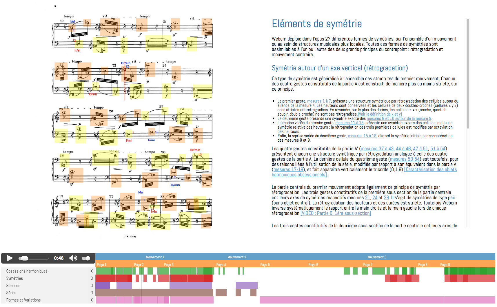

class: center, middle # Introduction au Web Audio Europeana Sounds BNF, Paris - France, 2 Oct. 2015 Samuel Goldszmidt, Ircam ([@ouhouhsami](https://twitter.com/ouhouhsami)) --- layout: true # Ircam → Web Audio --- ### Institut de Recherche et de Coordination Acoustique/Musique <img src="media/img/chambre.jpg" height=200px /> Créé en 1977 par Pierre Boulez, associé au Centre Pompidou <br> Financement principal : Ministère de la Culture et de la Communication Un lieu qui réunit des **musiciens**, des **chercheurs**, des **ingénieurs** <br> dans le but de **renouveller l'expression musicale** contemporaine <br> à travers la **science** et la **technologie**. 3 départements : R&D, Création, Médiation ??? Un lieu qui réunit des **musiciens**, des **chercheurs**, des **ingénieurs** dans le but de **renouveller l'expression musicale** contemporaine à travers la **science** et la **technologie** <!--et en abordant la création musicale comme un objet de recherche singulier.--> --- **Audio** et musique au cœur des problématiques de recherche <br> **Web** utilisé pour la dissémination <img src='./media/img/iMubu.png' height=200px/> <img src='./media/img/medias.ircam.fr.png' height=200px/> 2 projets ANR de recherche utilisant **technologies** et **standards** Web Audio : * [WAVE](http://wave.ircam.fr) (Web Audio Visualisation/Edition) 2012/2015 * [CoSiMa](http://cosima.ircam.fr) (Collaborative Situated Media, N. Schnell) 2013/2016 * 1<sup>ère</sup> Web Audio Conference [WAC](http://wac.ircam.fr/program.html) Janvier 2015 avec Mozilla et le W3C * Prochaine édition à [Georgia Tech, Atlanta](http://webaudio.gatech.edu/) en 2016. ??? Audio et Musique, au cœur des problématiques Ircam : 7 équipes de recherche : Acoustique instrumentale, Espaces acoustiques et cognitifs, Perception et design sonores, Analyse & synthèse des sons, Représentations musicales, Analyse des pratiques musicales, Interaction son musique mouvement Web : dissémination des savoir scientifiques, des base de données de compositeurs, d'œuvres, et, des outils pour la musicologie numérique. Développement d'outils d'écoute actives (projet Ecoutes signées) Comment les compositeurs, interprètes ... écoutent. Et avec Norbert Schnell, chercheur à l'IRCAM dans l'équipe ISMM on a décidé de réunir les deux. Au moment ou le "Web Audio" émergent véritablement pour des applications exigentes Et est accessible sur (quasi) tous les périphériques connectés de dernière génération #### Pourquoi transférer des savoirs, des technologies, des algorithmes d'informatique musicale de l'Ircam vers la plateforme Web ? * 3 000 000 000 d'utilisateurs - s'adresser au plus grand nombre * *Browser As An OS*, pas d'installation - "TTM" minimal * Plateforme partagée, multi-utilisateurs, temps réel et multimédia * Nouveaux champs d'expérimentation et de recherche et retours utilisateurs ex. Word → Google Doc --- layout: true # Web Audio technologies, standards et faits --- ## Histoire courte ~ 1995 : <bgsound> <embed> <applet> "l'équivalent <blink> pour le son" <br> ~ 1997 : Flash - player et Flash Media Server <br> ~ 2008 : HTML5 <audio> <br> ~ Depuis 2010 : Web Audio API **et liés au Web Audio** : WebSocket API, WebRTC (getUserMedia), HTTP streaming (DASH), Web Midi API, MediaStream Recording, Audio output devices API, Geolocation API, Device Orientation et Device Motion API, Presentation API ... ??? * 1995 : <blink> midifile et protocoles propriétaires (RTP, RTSP) * 1997 : côté client avec le plugin et côté serveur avec FMS et octobre 2008 Sound API dans Flash pour faire du traitement audio, minimal * 2008 : HTML5 <audio> * 2010 : HTTP streaming (DASH), WebRTC et WebSockets pour l'échange de données, Wep Audio API (première implémentation Chrome 2011). Web Audio API disponible sur Edge Web Audio !== Web Audio API 20 ans après la première possibilité de lire un son dans le navigateur, les standards proposent un ensemble de fonctionnalités primitives pour créer des applications audio temps réel ou non sur le web. Même s'il y a encore des choses qui manquent et à améliorer. --- ## Exemples d'intégration technique [<img src="./media/img/vocoder.png" height="220px" style="float:left;margin-right:10px" />](https://webaudiodemos.appspot.com/Vocoder/index.html) [<img src="./media/img/synth.png" height="220px" />](http://webaudiodemos.appspot.com/midi-synth/index.html) * Vocoder : getUserMedia + Web Audio API * Synthétiseur : Web Midi API + Web Audio API Explications interactives : [Recreating the sounds of the BBC Radiophonic](http://webaudio.prototyping.bbc.co.uk/) ??? Comment on fait fonctionner conjointement des standards. --- layout: true # Ircam Web Audio librairies, framework, apps --- ### waves.js > Une librairie pour faciliter le développement d'applications Web Audio (projet WAVE) * UI : Affichage et édition de données temporelles * Audio : Moteur audio et ordonnanceur * LFO : Chaîne de traitement audio Documentation: [wavesjs.github.io](http://wavesjs.github.io), [tutoriel](http://wavesjs.github.io/examples/01-ui-what-you-can-do-with-it.html) ### Collective-Soundworks > Un framework pour la création d'applications audio et multimédia collaboratives (projet CoSiMa) [Soundworks](http://github.com/collective-soundworks/soundworks) ??? Aborde les questions que la Web Audio API et d'autres standards ne résolvent pas (il ne s'agit pas d'un wrapper d'API). --- ["Blocs Gigognes", analyse du 4e mouvement de *Voi(rex)* de P. Leroux](http://wave.ircam.fr/demo/projects/blocs-gigognes/) ---  [Analyse *Opus 27* de Anton Webern par E. Ducreux](http://wave.ircam.fr/demo/projects/webern-opus-27/) --- <img src="./media/img/luna-park.aperghis.png" width=100%/> [Analyse *Luna Park* de Georges Aperghis par J.-F Trubert](http://wave.ircam.fr/demo/luna-park/) --- <img src="./media/img/bachotheque.png" width=90%/> ["Bachothèque" J.-S Bach](http://wave.ircam.fr/demo/projects/bachotheque/) --- [Beat, Chords and Structure of 1901 - Phoenix](http://wave.ircam.fr/demo/projects/demo-phoenix/) --- <iframe width="560" height="315" src="https://www.youtube.com/embed/0wVfqFnSsfA" frameborder="0" allowfullscreen></iframe> *Application Web Audio interactive et collective* Uniquement avec les technologies Web Audio ??? This application allows a group of players to perform Queen’s song “We Will Rock You” with a set of simple instruments and to create their own versions of the song. The players can choose between drums, voice solo, choirs, Freddy Mercury’s voice fill-ins (‘sing it’), a guitar power chord, and the final guitar riff. --- <iframe width="560" height="315" src="https://www.youtube.com/embed/R2ya0sQtX2I" frameborder="0" allowfullscreen></iframe> *Performance collective inspirée par Bloom de Brian Eno et Peter Chilvers* Uniquement avec les technologies Web Audio ??? The Drops collective smartphone performance is strongly inspired by the mobile application Bloom by Brian Eno and and Peter Chilvers. Drops reproduces several audiovisual elements of the original Bloom application while transposing them into a collaborative experience. The participants can play a limited number of sound drops that vary in pitch depending on the touch position. The sound drops are automatically echoed by the smartphones of other players before coming back to the player, creating a fading loop of long echoes until they vanish. Players can clear the echoes of their drops by shaking their smartphones. The collective performance is accompanied by a synchronized soundscape on ambient loudspeakers. The Drops web application has been designed by Norbert Schnell, Sébastien Robaszkiewicz, Benjamin Matuszewski, and Jean-Philippe Lambert with a sound design by Lorenzo Bianchi. --- layout: true --- # Conclusion * Les technologies Web Audio (!= Web Audio API) * Transfert de technologies dans un nouveau contexte (multimédia, connecté et collaboratif) * Nouveaux champs de recherche scientifique et artistique * Open-source et Open-data * Limitations techniques : * latences * synchronisation (*Second Screen*), * standard non implémentés partout (Web RTC) > ... pour quels usages innovants ? *(Si il reste une minute : [http://femurdesign.com/theremin/](http://femurdesign.com/theremin/))*